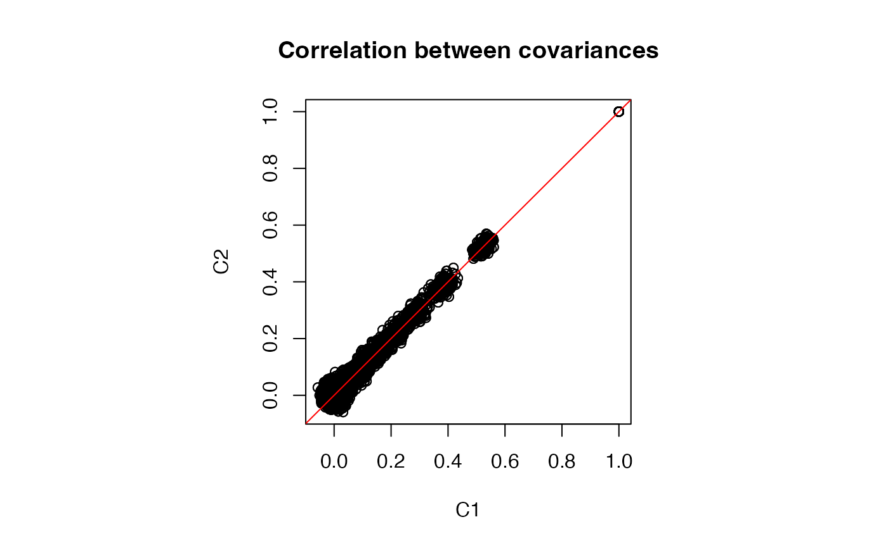
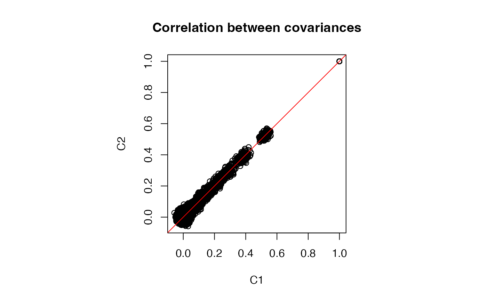

Given covariance between features in the original data, estimate the covariance matrix after applying a transformation to each feature. Here we use the eclairs decomposition of the original covariance matrix, perform a parametric bootstrap and return the eclairs decomposition of the covariance matrix of the transformed data.
Usage
cov_transform(
ecl,
f,
n.boot,
lambda = NULL,
compute = c("covariance", "correlation"),
seed = NULL
)Arguments
- ecl
covariance/correlation matrix as an eclairs object
- f
function specifying the transformation.
- n.boot
number of parametric bootstrap samples. Increasing n gives more precise estimates.
- lambda
shrinkage parameter. If not specified, it is estimated from the data.
- compute
evaluate either the
"covariance"or"correlation"ofX- seed
If you want the same to be generated again use a seed for the generator, an integer number
Value
eclairs decomposition representing correlation/covariance on the transformed data
Examples
library(Rfast)
#> Loading required package: Rcpp
#> Loading required package: zigg
#> Loading required package: RcppParallel
#>
#> Attaching package: ‘RcppParallel’
#> The following object is masked from ‘package:Rcpp’:
#>
#> LdFlags
#>
#> Rfast: 2.1.5
#> ___ __ __ __ __ __ __ __ __ __ _ _ __ __ __ __ __ __ __ __ __ __ __
#> | __ __ __ __ | | __ __ __ __ _/ / \ | __ __ __ __ / /__ __ _ _ __ __\
#> | | | | | | / _ \ | | / /
#> | | | | | | / / \ \ | | / /
#> | | | | | | / / \ \ | | / /
#> | |__ __ __ __| | | |__ __ __ __ / / \ \ | |__ __ __ __ _ / /__/\
#> | __ __ __ __| | __ __ __ __| / /__ _ __\ \ |_ __ __ __ _ | / ___ /
#> | \ | | / _ _ _ _ _ _ \ | | \/ / /
#> | |\ \ | | / / \ \ | | / /
#> | | \ \ | | / / \ \ | | / /
#> | | \ \ | | / / \ \ | | / /
#> | | \ \__ __ _ | | / / \ \ _ __ __ __ _| | / /
#> |_| \__ __ __\ |_| /_/ \_\ /_ __ __ __ ___| \/ team
n <- 800 # number of samples
p <- 200 # number of features
# create correlation matrix
Sigma <- autocorr.mat(p, .9)
# sample matrix from MVN with covariance Sigma
Y <- rmvnorm(n, rep(0, p), sigma = Sigma, seed = 1)
# perform eclairs decomposition
ecl <- eclairs(Y)
# Parametric boostrap to estimate covariance
# after transformation
# transformation function
f <- function(x) log(x^2 + 1e-3)
# number of bootstrap samples
n_boot <- 50000
# Evaluate eclairs decomposition on boostrap samples
ecl2 <- cov_transform(ecl, f = f, n_boot, lambda = 1e-4)
# Get full covariance matrix from eclairs decomposition
C1 <- getCov(ecl2)
# Parametric boostrap samples directly from full covariance matrix
X <- rmvnorm(n_boot, rep(0, p), getCov(ecl))
# get covariance of transformed data
C2 <- cov(f(X))
# Evaluate differences
# small differences are due to Monte Carlo error from boostrap sampling
range(C1 - C2)
#> [1] -0.1174916 0.1155881
# Plot entries from two covariance estimates
par(pty = "s")
plot(C1, C2, main = "Concordance between covariances")
abline(0, 1, col = "red")
 # Same above but compute eclairs for correlation matrix
#-------------------------------------------------------
# Evaluate eclairs decomposition on boostrap samples
ecl2 <- cov_transform(ecl, f = f, n_boot, compute = "correlation", lambda = 1e-4)
# Get full covariance matrix from eclairs decomposition
C1 <- getCor(ecl2)
# Parametric boostrap samples directly from full covariance matrix
X <- rmvnorm(n_boot, rep(0, p), getCov(ecl))
# get correlation of transformed data
C2 <- cor(f(X))
# Evaluate differences
# small differences are due to Monte Carlo error from boostrap sampling
range(C1 - C2)
#> [1] -0.02505992 0.02403754
# Plot entries from two correlation estimates
par(pty = "s")
plot(C1, C2, main = "Correlation between covariances")
abline(0, 1, col = "red")

# Same above but compute eclairs for correlation matrix
#-------------------------------------------------------
# Evaluate eclairs decomposition on boostrap samples
ecl2 <- cov_transform(ecl, f = f, n_boot, compute = "correlation", lambda = 1e-4)
# Get full covariance matrix from eclairs decomposition
C1 <- getCor(ecl2)
# Parametric boostrap samples directly from full covariance matrix
X <- rmvnorm(n_boot, rep(0, p), getCov(ecl))
# get correlation of transformed data
C2 <- cor(f(X))
# Evaluate differences
# small differences are due to Monte Carlo error from boostrap sampling
range(C1 - C2)
#> [1] -0.02505992 0.02403754
# Plot entries from two correlation estimates
par(pty = "s")
plot(C1, C2, main = "Correlation between covariances")
abline(0, 1, col = "red")
